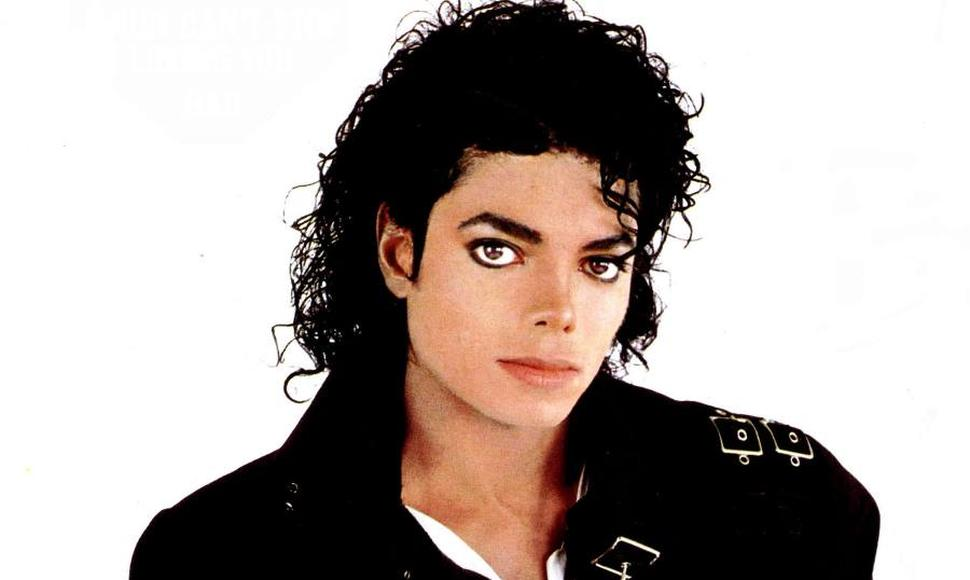

Estilo musical nacido en la década de 1960,
que tiene elementos de la música rock y de la música popular británica y se caracteriza por su estructura sencilla y directa
y por la especial importancia que se concede a la melodía.
Estilo musical nacido en la década de 1960,
que tiene elementos de la música rock y de la música popular británica y se caracteriza por su estructura sencilla y directa
y por la especial importancia que se concede a la melodía. Estilo musical nacido en la década de 1960,
que tiene elementos de la música rock y de la música popular británica y se caracteriza por su estructura sencilla y directa
y por la especial importancia que se concede a la melodía.
 michael jackson